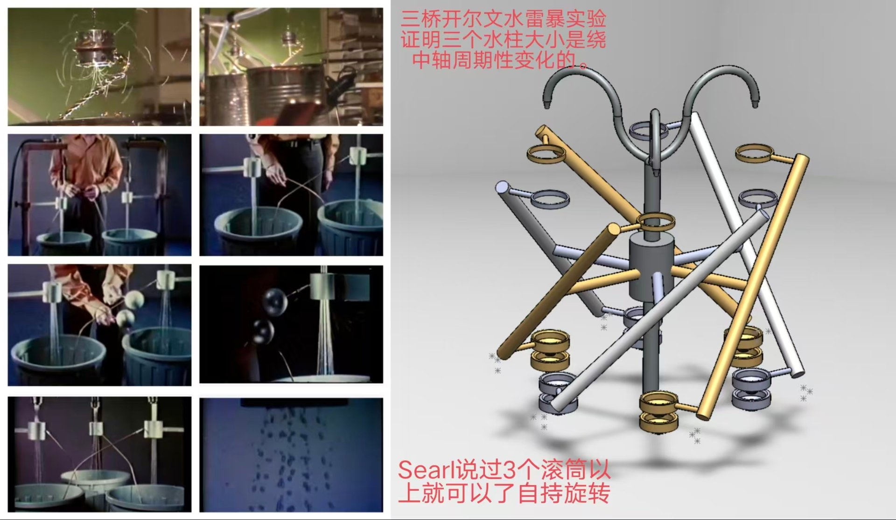
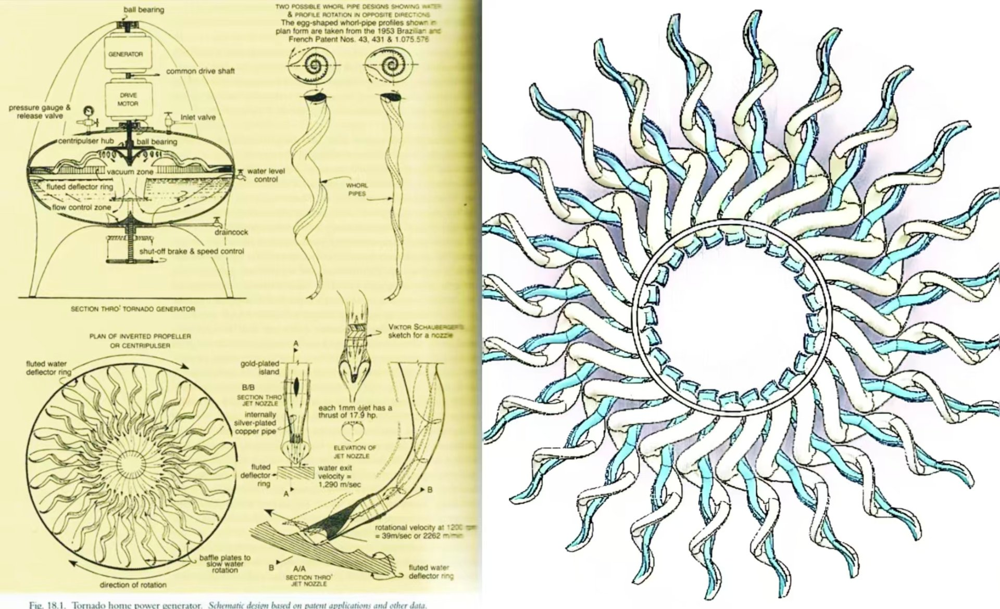

① 正视图 N 路水滴柱按角度展开 · 交叉桥线 · 感应环 · 火花
元宝回答全记录 · ③ ｜ 来源分享页 cran7xqSxdPy（分享于 2026-11-08）
双桥两个节点改成 N 节点首尾闭环，本征值从实根变共轭复根——三相交流不是谁接了振荡器，是拓扑从 2 改成 3 之后自己冒出来的。

| 对象 | 操作 |
|---|---|
| 右浮窗 | 拖标题栏可移动；点 ▾ 收起为窄条；拖左边缘可调宽（230–470 px）。左浮窗同理（内边缘在右侧） |
| 画布 | Shift + 拖动 平移画面（搬的是整个装置，不是相机）；双击 归位。四张画布各自独立 |
| 路数 N | 2／3／4／5／6 即时切换，重算本征值并重置起电。N=2 时「柱间距」与「并拢对照」才生效 |
| 手性 | CW / CCW 整体反接——按元宝的可检验预测，旋向应当翻过来，左浮窗「旋向」栏可直接读出 |
| 选项条 | 仿真台正上方一整条：左边十项显示开关＋并拢对照＋全部归位（全部即时生效，不改物理）；最右边是接线实验——断桥与环向串联电阻，一红到底那一组是改方程的 |
| 接线实验 | 断桥（桶压根不接感应环）与环向串联电阻（7 档）。这两个点完不重置历史，能当场看着电压从当前值衰减下去；② 上的红 ✕ 是断桥、外圈红环是电阻。原理见 §9.4 |
| 单步 | 暂停状态下点「单步 +0.5 s」，可逐段看电压怎么爬 |
左浮窗里有两个频率，它们不是同一个东西，也不该相等——这一点比读数本身更重要：

图右侧示意：三组斜杆组件绕中轴 120° 排布，每组上端一个感应环、下端一个集水杯，顶上两根 U 形供水管。图左侧那组照片其实是 Walter Lewin 在 MIT 8.02 的经典双桥演示（两桶两环交叉接、约 10 kV 打火、水柱散成伞、悬挂小球来回摆）；右图是把它推到三路。
双桥是两路互叉：左桶→右环、右桶→左环，一个 2-置换。三桥是 N 桶首尾闭环：每个桶的感应环接相邻那一路，第 N 个再接回第 1 路；等效电路里 Vi 同时依赖 Vi−1、Vi、Vi+1。
| 项目 | 双桥（2-cycle） | 三桥（3-cycle） | N 桥（N-cycle） |
|---|---|---|---|
| 接线 | 两桶交叉互接 | 三桶首尾闭环 | N 桶首尾闭环 |
| 耦合矩阵 | 2×2 置换 | 3×3 循环置换 | N×N 循环置换 |
| 本征值 | 实数（±） | 一对共轭复根 | 多组复根＋可能实根 |
| 输出 | 直流高压，指数增长、无振荡 | 自激三相交流高压 | 多相多频交流 |
| 时长行为 | 单调冲到击穿再重来 | 收敛到极限环 | 模式竞争 → 复杂周期 |
仿真台的 ② 号画布就是这张表：N=2 时两条弧端点互换（互叉），N≥3 时箭头首尾绕成一圈。改「接线手性」= 把这圈箭头整体反向。
「首尾闭环」只是 k=1。把规则放宽成 桶 i 接 i+k 那一路，就得到数学上说的星形多边形 {N/k}（regular star polygon）：N=5、k=2 是五角星，N=6、k=2 是六角星（画出来正好是两个三角形），N=6、k=3 是三条对角。k 与 N−k 是同一个图（只是方向反过来），所以只需取 k ≤ ⌊N/2⌋。
这件事只有一个图论判据：gcd(N,k)。
| 接法 | 图 | gcd | 分量 | 主导 Re λ（τ=0） | 相邻相差 | 结果 |
|---|---|---|---|---|---|---|
| 五边形 k=1 | C₅ | 1 | 1 个 5 环 | 1.81 /s | 144° | 一个 5 环，主导 m=2（绕两圈） |
| 五角星 k=2 | {5/2} | 1 | 1 个 5 环 | 1.81 /s | 72° | 谱与五边形完全相同，主导换成 m=1（绕一圈） |
| 六边形 k=1 | C₆ | 1 | 1 个 6 环 | 2.02 /s | 180° | m=3 是纯实根 → 成对反相，无旋转 |
| 两三角形 k=2 | {6/2} | 2 | 2 个 3 环 | 1.47 /s | 组内 120° | 两套独立三桥：各自锁定，组间相位不锁 |
| 三条对角 k=3 | {6/3} | 3 | 3 个 2 环 | 2.02 /s | 180° | 三套独立双桥，各自 DC |
gcd(N,k)=1 时：{N/k} 与 CN 同构，本征值集合一模一样 —— 所以「能不能起电、起电多快」完全不变（五边形与五角星都是 1.81 /s）。变的只有一件事：哪个空间模胜出。θ = 2πkm/N，最快的那个模要满足 km ≡ N/2，于是 m* ≈ N/2k；相邻两桶的相差从 2π/N 变成 2πk/N 的整数倍。五边形偏好「绕两圈」，五角星偏好「绕一圈」。
gcd(N,k)>1 时：图裂开。六个桶用 {6/2} 接，实际是 {0,2,4} 与 {1,3,5} 两个三角形，彼此没有任何连线；每组内部照常锁定 120°，但两组之间的相位由种子决定、不会锁定。起电也变慢（1.47 vs 2.02 /s），因为每套只有三路耦合，不是六路。这就是「六边形用两个三角形桥接效果不一样」的根子。
Zahn 原文两句几乎是并排写的：
这一句就是红字的物理底。反馈矩阵从 2 节点换成 3 节点循环耦合后，本征值由实数变成共轭复根：增长项还在，但多出振荡频率；三相交流即依次差 120° 的相序。
加上水滴飞行延迟、击穿放电与漏电饱和，系统收敛到一个极限环，而不是像双桥那样单调冲到击穿再重来。所以「绕中轴周期性变化」不是谁接了振荡器，是拓扑从 2 改成 3 之后自己冒出来的——这正好是「失稳型涌现」从不动点升级到周期轨道。
哪一相电压爬到峰值 → 该路水滴带电量最大 → 同号互斥最强、散开包络最宽，还被同名桶往上推 → 击穿后该相塌掉，下一相接棒。三相轮流，视觉上就是「粗细／散开程度绕轴转」。
严格讲：变的不是体积流量，是带电后的散开直径与轨迹；不过强电场确实会改射流断裂位置（泰勒锥 / 瑞利–普拉托那一支），所以「水柱看起来变粗变细」还有第二重机制。图里当作观察表述可以，当成流量实测就要小心。
仿真台里这条预测是可当场验的：点「CCW 桶 i → 环 i−1」，②号画布箭头与环带绕行方向立即反向，左浮窗「实测相邻相差」的符号同步翻号，其余参数一个没动。
「Searl 说 3 个滚筒以上自持旋转」和开尔文实验不是一回事。
为把「2-cycle → 3-cycle ⇒ 实根 → 共轭复根」这件事做成实时可调，本页用最小线性反馈模型：
方括号那一项就是「本路水滴带走的电荷 ∝ 本路与相邻感应环的电位差」，符号取负号（异号感应）→ 落进本桶 → 电位再升，即正反馈。取 N 与手性即可解析出全部模态：
| N | 主导模态 | 判定 | 画面上应该看到 |
|---|---|---|---|
| 2 | m=1 为实根 2α−β | 直流（Im λ = 0） | 单调指数爬到击穿→塌落→重来；相图轨迹锁在 V₁=−V₂ 对角线上 |
| 3 | m=1,2 一对共轭复根，Re = 1.5α−β | 三相交流（Im λ = ±0.866α） | 三条曲线错开 120°，收敛极限环；相图绕成闭合环 |
| 4 | 实模 2α−β 最快 ＋ 复模 α−β | 实模主导＋复模共存 | 成对反相为主，叠一层较慢旋转 |
| 5 | 两组复模 Re 均 > 0 | 多频交流（无实模占优） | 包络不再等幅，出现拍频 |
| 6 | 实模 2α−β ＋ 复模 | 实模主导＋复模共存 | 准直流叠旋转，击穿节律不规则 |
参数面板「击穿电压 Vbd」下面多了一个开关：放开上限（|V| → ∞）。勾上它，打火复位那一段整段跳过，模型就退化成纯粹的线性延迟方程——
这时答案很干净，也没什么可商量的：
| 问 | 无上限时的结果 |
|---|---|
| 电压会怎样 | 只要主导模态 Re λ > 0，就是严格指数增长 V ∝ eλt，λ = α(1−cos 2πk/N) − β。默认三桥 λ≈0.4 /s（倍增约 1.7 s）；五桥 {5/2} λ≈1.81 /s（倍增约 0.38 s） |
| 还有没有「周期」 | Im λ≠0 时波形还在振荡，但没有极限环了。极限环是「增长」和「饱和」打出来的平手，抽掉饱和，平手就没了，只剩一条一路向上的指数 |
| 「三相」还在不在 | 相位差还在——它是线性模态的固有相位，与幅度无关，所以 ±120° 依旧；但幅度无界。示波器上看到的是三条越离越开的指数曲线，「三相交流」只剩相位、没有稳定幅值 |
| 能量从哪来 | 还是水滴重力做功转成静电能。无上限只意味着没有任何机制把能量泄掉——物理上不成立，数学上就是解跑向无穷 |
| 数值上会看到 | 默认参数下约 11 s 撞到 5×105 kV，页面自动暂停并给出提示。这不是程序坏了，这正是「无饱和」的必然结局 |
前面几节都在 N=2…6 里打转，那几个数公因数太少，看得出「裂开」，却看不出裂得有多整齐。24 = 2³×3 是这一段里公因数最多的一档，k 从 1 取到 12，gcd(24,k) 恰好把 1／2／3／4／6／8／12 七种值全给到，于是「裂成几组 × 每组几环」可以一级一级往下走：
| k | gcd(24,k) | 图变成了什么 | 能不能起电 / 相位还锁不锁 |
|---|---|---|---|
| 1,5,7,11 | 1 | 仍是一个 24 环。这四个 k 与 24 互素，换 k 只是把节点重新编号 → 图同构，谱集完全相同 | 能和 k=1 一样起电、起电快慢也一样（谱集相同）。变的只是节点编号与桥两端相差 = k×15°；但 N=24 的主导模是 m=12 那个实驻波，所以旋向恒为「无」——见下方提示 |
| 2 | 2 | 2 组 × 12 环（两组各走各的，互不耦合） | 组内锁 30°；组间相位由种子决定，不会锁定 |
| 3 | 3 | 3 组 × 8 环 | 组内 45°；同上 |
| 4 | 4 | 4 组 × 6 环 | 组内 60° |
| 6 | 6 | 6 组 × 4 环 | 组内 90° |
| 8 | 8 | 8 组 × 3 环 → 8 副互相独立的三桥 | 每一副内部才谈得上「三相」 |
| 12 | 12 | 12 组 × 2 环 → 12 副互相独立的双桥 | 退化成本系列第 ② 页的那个系统，只是并排摆了 12 套 |
d 组 × (24/d) 环；本征值表里会看到谱值成组重复——这正是「解耦」在频域的样子，重复 d 次的那族模分别对应 d 个互不相干的子环。同时「实测相邻相差」会退化成组内值，组间那一段是随机的。gcd 的算术。④ 的量程以前是按 Vbd·N/2 定的 —— 那是「N 个桶同时顶在峰值、且同相叠加」的上限。真实情况是各桶相位互不相同，|A| 的量级是 √N 而不是 N：N=24 时实测 |A| 只到那个上限的 7%，于是轨迹缩成针尖大的一点（就是老师截图里那个红箭头）。现在改成按窗口内 |A| 的均值 × (1.4 + CV/100) 定量程 —— 波动越大就多留余量，这条式子自己会随 N 和波形调整（N=3 实测 CV≈33% → 1.73×；N=24 k=6 实测 CV≈200% → 3.4×）。N 再大，主体也照样铺满画幅；右上角实时写出当前量程，不做黑箱。
⑤ 怎么打分：α／β／τ／chir／Vbd 全部不动，只把 k 换掉，每个 k 跑一段独立的 7 s 小仿真（h=0.01，同一套方程，不碰主仿真的状态），量五个量：
| 维度 | 怎么算 | 为什么用它 |
|---|---|---|
| 旋转 | 净转角 ÷ 总转角 | 0.5 = 乱走、1.0 = 单向绕行。不能用「角增量同号比例」：来回摆动时只有两个转折点反向，同号比例照样接近 1，每个 k 都会被判成「转得很干净」 |
| 圆度 | 1 − CV(|A|)/70%，先对 A 做 ±0.08 s 低通 | 不低通的话量到的是火花毛刺，不是环本身；④ 里画的就是这条低通轨迹 |
| 尺度 | mean|A| ÷ (0.85·Vbd) | 太小的环在屏幕上读不出形状，等于没有 |
| 起电 | 起电段（10%→50%）RMS 的实际 log 斜率 | 这就是「电压增益速度」；用实测而不用 λ，因为 τ 会把有效增长率拖低 |
| 节律 | 1 − CV(打火间隔)/90% | 打火稳不稳，决定它像不像一台机器而不是一台噪声源 |
仿真台正上方的选项条最右端多了两个开关，它们不是显示开关，是改方程：一个是把桶与感应环之间整段掐断（压根没接），另一个是在物理上相邻的两个桶之间串一根可调电阻绕成一圈。两个都直接问同一件事：正反馈还在不在。
| 开关 | 方程改了什么 | 会发生什么 |
|---|---|---|
| 断桥 （复选框） | α 整项删掉，不是调小： dVi/dt = −β·Vi | 每个桶只按自己的时间常数漏电，V(t) = V₀e−βt：β=0.18 时半衰期 3.9 s，20 s 后剩 2.7%。永远到不了 Vbd，不会打火 |
| 环向电阻 （7 档滑杆） | 加一项图拉普拉斯： + κ·(Vi+1+Vi−1−2Vi) κ = 1/(R·C) | 只压 Re λ、不动 Im λ： Re λm −= 2κ(1−cos 2πm/N) κ 够大时全部模态 Re<0，也熄火 |
勾上「断桥：桶压根不接感应环」之后，② 号的桥线变灰、每座桥中间打一个红 ✕，中央写「断桥 · α ≡ 0」，① 号的桥同样打 ✕，左浮窗「桥接状态」一栏变红。此时 α = 0，方括号那一项整个没了：
③ 号时程图上会看到所有通道从当前值单调衰减到零，没有击穿、没有周期、没有 120° 相位——因为相位是模态的性质，模态全衰减了，谈相位没有意义。④ 的相图轨迹会螺旋收进原点。这不是「三相被压制」，是根本没有三相这回事。
「环向串联电阻」在相邻两桶之间接一根 R，绕成一整圈。它加到方程里的是一项扩散（电荷在桶与桶之间串流），本征值上就是实部再减 2κ(1−cos 2πm/N)，虚部不动——因为它是一个实对称的耦合，不破坏手性。
第一直觉会说「这是低通，高阶模先死」。算一下就知道不对：α 那一项的增长也正比于 (1−cos)，两项同权重，相除之后阈值是
这个式子随 m 单调上升——(1−cos) 越大，β 那一项被除得越小，阈值越高。也就是说：越「快」的模越抗压，先被压死的是最慢的那个。数值（α=1.10、β=0.18、C 取 10 pF 时 R* = 1/(κ*C)）：
| N | 各模的临界 κ*（/s） | 最先熄火 | 折算 R*（C=10 pF） |
|---|---|---|---|
| 3 | m=1,2 两个模同谱：0.49 | 0.49 一刀切，全灭 | ≈ 200 GΩ |
| 4 | m=1 → 0.46；m=2（实驻波）→ 0.505 | m=1（旋转）先死 | ≈ 220 GΩ |
| 5 | m=1 → 0.42；m=2 → 0.50 | m=1 先死，0.42~0.50 之间只剩 m=2 | ≈ 240 GΩ |
| 6 | m=1 → 0.37；m=2 → 0.49；m=3 → 0.505 | m=1 最先，m=3（实驻波）最后 | ≈ 270 GΩ |
| 24 | m=12（实驻波）→ 0.505；m=6 → 0.46；m=1 本来就 Re<0 | 能转的先死，剩 m=12 不转 | ≈ 200 GΩ |
于是有两条可以直接在页面上验的结论：
这个问题得先把「场能在哪」拆开，不拆开就会问错地方：
| 位置 | 断桥之后 |
|---|---|
| 水滴内部 | 恒为零。水是导体，静电平衡下导体内部 E ≡ 0（法拉第笼），所以「水滴内部累积场能」这个说法本身不成立——静电场能 ∫½εE²dV 全部落在水滴外表面附近的空间里，不在水里面 |
| 水滴表面 + 周围空间 | 每滴带走的电荷 q ≈ C滴·V环，而 V环 因为不再被补充，只会降 ⇒ 后一滴永远比前一滴少。总输出随时间指数趋零，不存在「越积越多」 |
| 桶 / 环 / 绝缘子 | 只有 ½CV² 这点存量。默认种子 V₀=4 V、C=10 pF ⇒ 80 pJ；真爬到 10 kV 也才 0.5 mJ。两者差 600 万倍，这 6 个多数量级全部由反馈放大出来——断桥就是把放大倍数打回 1 |
换个角度更好记：开尔文滴水器是电荷放大器，不是能量放大器。能量的源头始终是重力（水滴逆着电场下落做功），反馈只是让「下一滴的电荷更多」，从而把同一份机械功搬到更小的电容上抬成更高的电压。所以——